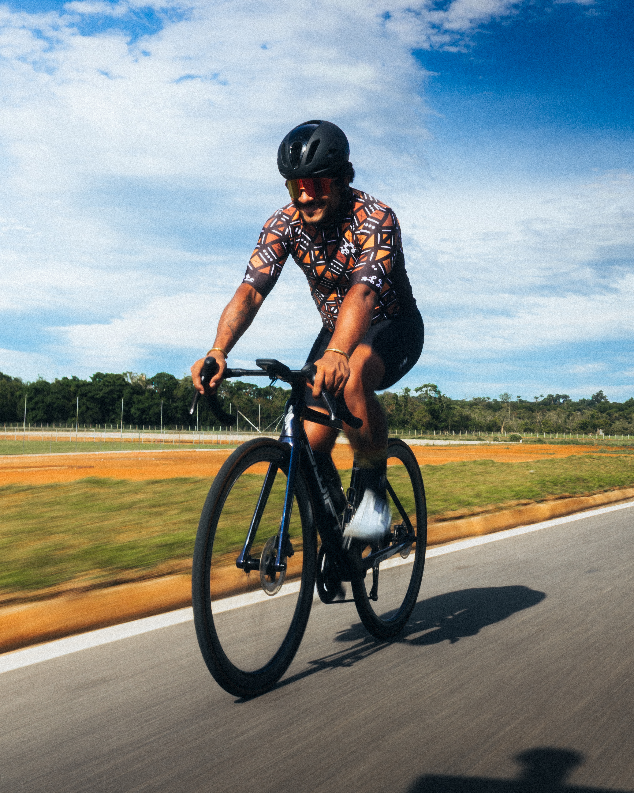
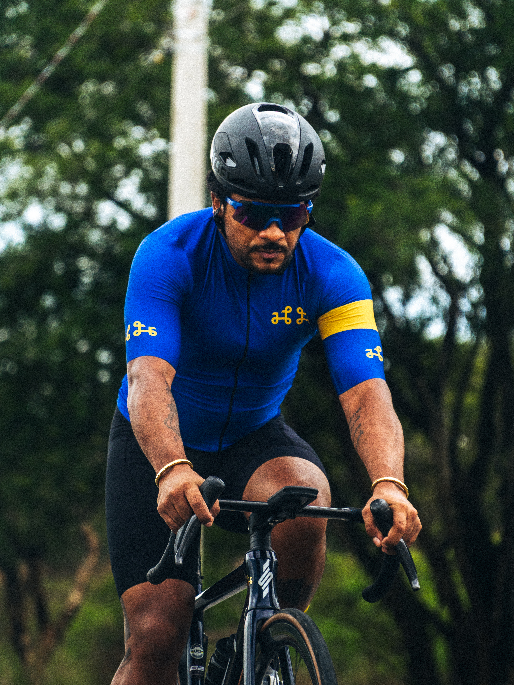
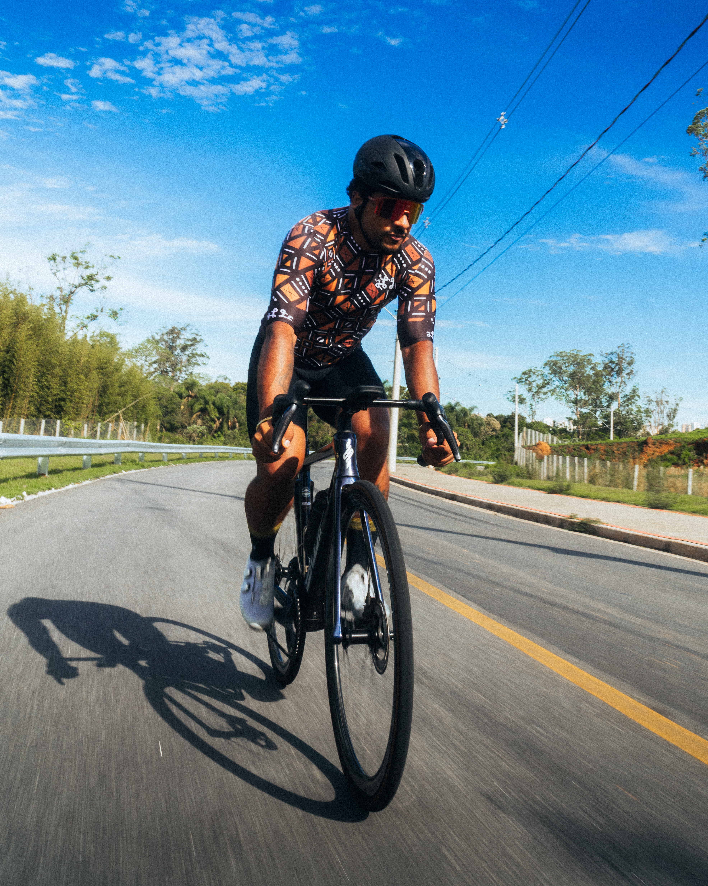
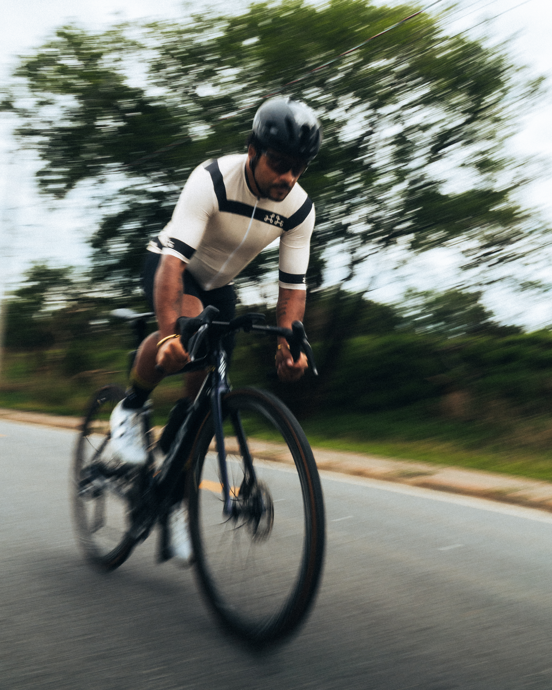
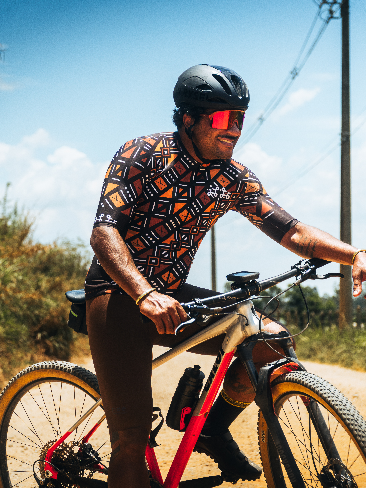
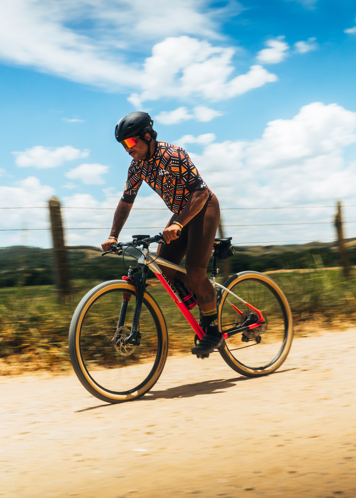

A velocidade
tem cor.
Para mim, ciclismo nunca foi só um esporte. É onde aprendo a disciplina que sustenta tudo o que construo — na tecnologia, nos negócios, na vida.
É também onde descubro que o meu corpo — num esporte historicamente embranquecido — é um ato de presença por si só. Cada pedalada é uma declaração. Cada jersey carrega um símbolo. Cada quilômetro percorrido é território conquistado.
O ciclismo africano cresce e ganha voz global. Iniciativas como a Team Africa Rising levam formação profissional para Uganda, Ruanda e Eritreia desde 2007 — provando que o esporte pertence a todos. No Brasil, eu quero fazer o mesmo: de preto, pra preto.
A bicicleta me ensinou que resistência não é apenas física. É identidade. É estratégia. É o que liga o atleta ao ativista.
Desde 2007, desenvolvendo o ciclismo profissional em todo o continente africano — conectando jovens talentos com o UCI World Cycling Center, formando treinadores e mecânicos, e construindo uma voz africana no esporte mundial. Presentes em mais de 60.000 seguidores e cobertura no NYT, BBC e The Guardian.
teamafricarising.org ↗





"Pedalar é um ato político."
— Jorge Bernardo